Survival Systems¶
Surviving on DeerIsle requires more than just a loaded gun. You must manage your physical condition, treat complex injuries, and navigate hazardous environments.
Table of Contents¶
- Advanced Stamina
- Character Skills
- 🛡️ Immunity
- 🍎 Metabolism
- 💉 Medicine
- 🏃 Athletics
- 💪 Strength
- 🕶️ Stealth
- 🌲 Survival
- 🦌 Hunting
- 🎣 Fishing
- Advanced Medicine
- Medicines Overview
- Vaccines
- Disinfection
- Hematomas
- Gunshot & Stab Wounds
- Concussion
- Cold / Pneumonia
- Food Poisoning
- Chemical Poisoning
- Zombie Virus
- Sepsis
- Rabies
- Pain
- Overdose
- Sleep
- Mental Health
- Radiation Zones
Advanced Stamina¶
Survivatorium features a realistic stamina system that forces you to think carefully about your loadout and your route.

Two Stamina Bars (Important)¶
- White bar: Short-burst vanilla stamina for immediate actions.
- Yellow bar: Inedia general stamina (long-term endurance).
On this server, Inedia stamina is active, while Inedia's own sleep stamina is disabled. Your sleep/fatigue gameplay comes from the Terje medicine system instead.
Weight Matters¶
The more gear you carry, the slower you will move and the faster your stamina will drain. - Light Load: Optimal for long-distance travel and combat mobility. - Heavy Load: You will experience noticeable slowdowns, especially once you move into very high carry weight. - Overloaded: The harsh movement penalties begin much later than vanilla-style hardcore setups, but if you push too far you can still be forced into walking and eventually movement lock.
Terrain & Slopes¶
Your environment directly impacts your energy levels: - Surfaces: Running on paved roads is highly efficient. Running through tall grass, deep snow, or wading through water will exhaust you quickly. - Slopes: Sprinting up a steep hill will drain your stamina in seconds. Plan your routes to avoid steep inclines if you are heavily geared.
How This Server Is Tuned¶
- More forgiving than default Inedia: Sprint/jog drain is reduced compared to stock wiki values, so players can stay active longer in PvP and movement-heavy fights.
- Low/Critical thresholds: Debuffs begin at roughly low yellow stamina, and become severe at critical yellow stamina.
- Heat still matters: Overheating increases stamina consumption, so temperature management is still part of movement planning.
Energy Drinks¶
Keep an eye out for energy drinks (like MadBull or Pipsi). Consuming them will give you a temporary boost to your stamina recovery, which can be a lifesaver during a long trek or a firefight.
Essential Survival Tools¶
The Metro Watch¶
A true survivor needs to keep track of time and their environment. The Metro Watch is a highly sought-after piece of gear that provides crucial information at a glance. - Time & Date: Keep track of daylight hours so you aren't caught out in the dark. - Environmental Data: Some models can help you monitor your surroundings, making it an invaluable tool for navigating the harsh weather of DeerIsle.
Character Skills¶
Your character grows more capable the longer you survive. Nine skill trees cover every aspect of survival — your actions in the world directly determine how your character develops. Each skill tree has a passive modifier that improves automatically as you level up, plus a set of unlockable perks that grant targeted bonuses.
Skill Books can be found across the world. Reading one grants a burst of experience in its associated skill tree.
Your skills are persistent — you do not lose them when you die. A small amount of experience may be reduced on death, but you never start from zero.
🛡️ Immunity¶
How to level: Treat illnesses and recover from diseases, viruses, and infections.
Passive bonus: Each level reduces your chance of getting sick and speeds up illness recovery.
- Influenza Resistance — Your body copes better with the cold virus, slowing the infection progress and giving you more time for treatment.
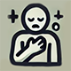
Poisoning Resistance — Your body has increased resistance to food poisoning.- Bruises Recovery — Your bruises heal faster due to the body's improved ability to regenerate.
- Wounds Healing — Your wounds heal faster thanks to improved tissue regeneration.
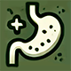
Intoxication Resistance — Your body has adapted to the effects of medications, which allows it to remove overdosing faster and minimize negative effects.- Fast Sleep — It takes you less time to get a full sleep and rest.
- Iron Mind — Your psyche has become stronger and accustomed to the horrors of the apocalypse and stressful survival situations, which makes you less prone to panic and mental disorders.
- Shock Recovery — Your body has learned to get out of shock states and comas easier and faster.
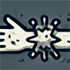
Fighter — Your body has become more resistant to physical damage.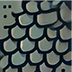
Iron Skin — Your body has adapted to mechanical damage, so you get fewer cuts.- Zombie Virus Resistance — Your body has developed unique defense mechanisms to counteract the zombie virus.
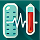
Sepsis Resistance — Your body has adapted to the effects of infections, which allows it to deal with blood poisoning more effectively.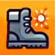
Warm Feets — Your body uses warmth and comfort to fight colds.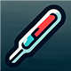
Thermoregulation — Your body has adapted to hard environmental conditions, which reduces the impact of low and high temperatures on your body.- Strong Stomach — Your stomach has a strong and aggressive microflora, which significantly reduces the risk of poisoning with spoiled food.
- Quick Healing — Your body has outstanding recovery abilities, which allows you to recover health points much faster.
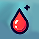
Blood Regeneration — Your body has learned to restore blood in the body faster after serious blood loss.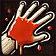
Thick Blood — Due to the increased viscosity of the blood, blood loss occurs more slowly, which gives you more time to stabilize your condition and apply medical care.- Rabies Resistance — Your strong immune system better resists the rabies in your body, as a result of which the course of the disease is slower and gives you more time to find a cure.
- High pain threshold — Your body tolerates pain better, which reduces the pain level by 1 unit.
- Chemical poisoning resistance — Your body has an increased resistance to chemical and biohazard agents.
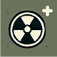
Radiation Regeneration — Your body recovers from radiation exposure faster after leaving a contaminated zone.
🍎 Metabolism¶
How to level: Eat food and drink water regularly.
Passive bonus: Each level reduces your calorie and water consumption.
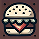
Increased calorie content — Your body has learned to digest food better, extracting more energy from it.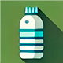
Increased Hydration — Your body has optimized the process of water absorption, allowing you to extract more benefits from each serving of liquid.- Energy Saving — Your body has learned to expend energy efficiently at rest, which significantly reduces overall energy costs when you are not actively moving.
- Saving Water — Your body has adapted to the minimum consumption of water at rest, which allows you to go longer without drinking when you are inactive.
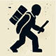
Energy Containment — Your body has optimized energy consumption both when walking and jogging.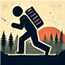
Water Containment — Your body has learned to effectively maintain its water balance both when walking calmly and when jogging intensively.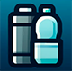
Thirst Resistance — You have learned how to fight thirst and suffer less from dehydration.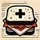
Hunger Resistance — Your body is used to a lack of food and spends energy more economically.- Energy Control — Your body has become more efficient at managing energy while running, which allows you to spend less energy on each movement.
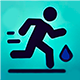
Hydration Control — Your body has learned to effectively manage the water balance even with intense physical exertion.- Cold Metabolism — Your body burns calories more efficiently in cold conditions, retaining warmth and energy for longer.
- Cold Hydration — Your body manages hydration more efficiently in cold environments, reducing water loss from exposure.
- Predatory Digestion — Your stomach produces special enzymes and bacteria that help digest the meat of predators without consequences for the body.
💉 Medicine¶
How to level: Treat wounds and illnesses — on yourself or other survivors.
- Stab Wounds Surgery — You increase the chance of successfully sewing up a stab wound with a surgical kit.
- Internal Organs Surgery — You increase the chance of successful surgery if internal organs are damaged.
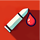
Bullet Wounds Surgery — You increase the chance of successfully removing a bullet from the body with a surgical kit.- Cleanliness and Sterility — You reduce the chance of getting an infection into the wound.
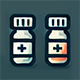
Improved Drugs — All medications last longer, giving you more time to recover and heal.- Master of Dressing — Your dexterous hands are able to stop bleeding quickly and effectively.
- Surgeon — Your precise and confident movements allow you to perform operations at maximum speed.
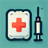
Cardiopulmonary Resuscitation — You have learned how to quickly bring a person out of unconsciousness.- Pills Recognition — Your extensive experience in pharmacology helps you to recognize drugs in tablets.
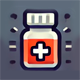
Ampoule Recognition — Your extensive experience in pharmacology helps you to recognize medicines in ampoules.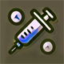
Injectors Recognition — Your extensive experience in pharmacology helps you to recognize drugs in injectors.- Antibiotics Expert — Increases the effectiveness of antibiotics by increasing their level by 1 and improving the body's protection against diseases.
- Anesthesiologist — Your skills in using anesthetics are impeccable.
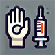
Immunomodulator — Your body adapts perfectly to vaccination, prolonging its effect.- Stethoscope mastering — You have learned how to masterfully use a stethoscope to accurately diagnose the condition, diseases and wounds of your patients.
- Hazard Awareness — You are better prepared to handle exposure to biological and chemical hazards.
🏃 Athletics¶
How to level: Run long distances.
Passive bonus: Each level increases your maximum stamina.
- Quick Legs — You spend less stamina when sprinting.
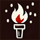
Marathoner — You regain stamina faster when jogging.- Proper Breathing — You recover stamina faster by standing still.
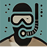
Swimmer — You reduce stamina consumption and increase its recovery when swimming.- Ladders Master — You reduce stamina consumption and increase its recovery when using vertical ladders.
- No Panting — You reduce the delay before stamina is restored.
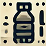
Hydration Control — You reduce water consumption when running.- Energy Control — You reduce the consumption of food when running.
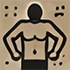
Enduring — Your body is hardened for long-term loads.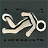
Stuntman — You reduce the damage you receive from falls.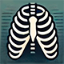
Strong Bones — Your bones have become stronger, reducing the risk of fractures.
💪 Strength¶
How to level: Physical activity and using melee weapons.
Passive bonus: Each level increases your maximum carry weight.
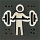
Heavyweight — Your physical fitness allows you to carry more weight.- Jumper — Your jumps have become easier.
- Master of Protection — You effectively deflect attacks, spending less stamina on blocking attacks.
- Master of Evasion — Your defense skills are honed to perfection.
- Swift Attacks — Your fast attacks have become more effective.
- Strong Attacks — Your fast attacks have become more powerful.
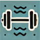
Heavy Onslaught — You have learned how to distribute your forces correctly.- Destructive Onslaught — Your strong punches have become more destructive.
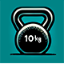
Sturdy Hands — Your body is designed to carry heavy and bulky objects.- Masterstroke — Your single punches are so powerful that they can instantly knock out zombies or other players.
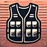
Lightweight Armor — You have learned how to wear armor effectively, reducing its weight on your body.- Bonecrusher — Your powerful blows with cold steel are so destructive that they are highly likely to break the bones of enemies, disabling them and leaving them helpless.
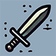
Master of Sword — Your blows with cold steel are so accurate and strong that one powerful swing to the upper body can decapitate an opponent, instantly depriving him of any chance of escape.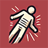
Armor Dissector — Your skill with melee weapons allows you to deliver more powerful blows.
🕶️ Stealth¶
How to level: Move stealthily and avoid detection by infected.
- Quiet Steps — Your footsteps become quieter, which helps to avoid unnecessary attention and be more silent for other survivors.
- Coldblooded — You remain absolutely calm in any situation.
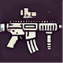
Commandos — Reloading and other manipulations with weapons create less noise, allowing you to remain stealthy even in stressful situations.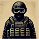
Fitted Equipment — Your character's gear makes less noise when moving, which helps you avoid unnecessary attention and be more silent for other survivors.- Invisible Man — The skill of staying in the shadows and avoiding loud actions makes you virtually invisible to the infected, allowing you to easily pass through dangerous territories.
- Cat's Vision — Your eyes adjust to the dark like a cat's.
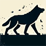
Wolves Friend — Your understanding of predator behavior allows you to stay out of their field of view and not attract them with your scent.- Bears Friend — Thanks to your experience and understanding of the habits of wild animals, bears notice you less often and do not show aggression, giving you a better chance to avoid a dangerous encounter.
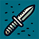
Silent Killer — Your knife handling skills are impeccable.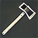
The Silent Executioner — You get the opportunity to make quick and silent kills with a two-handed bladed weapon.- Ninja — All the noise and sounds you make become 50% quieter at night.
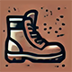
Invisible Step — Your footsteps make almost no sound, making it nearly impossible for infected to hear you approach.- Silent step — You have reached the highest level of stealth.
🌲 Survival¶
How to level: Kill infected, start bonfires, and stay alive.
Passive bonus: Each level reduces environmental temperature impact, zombie damage, and fire-starting time.
- Pyromaniac — You have learned how to quickly and effectively light a fire that will save you in all weather conditions.
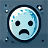
Cold Resistance — It's like you were made for the cold.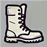
Rough Feet — Your feet are so used to harsh conditions that the risk of getting cuts or injuries without shoes is noticeably reduced.- Rough Hands — Your hands feel like they're made of steel.
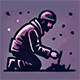
Ancestral Technologies — You have mastered ancient techniques that allow you to craft a homemade ignition kit.- Fire Efficiency — Your fire handling skills allow you to maintain it for longer with less resources.
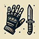
Durable Material — Your skills with tools and weapons allow you to reduce the wear of gloves, which reduces the chance of damage during active use.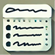
The Expert — Your extensive knowledge of food allows you to see detailed information about calories, nutrients and other characteristics of foods.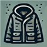
Durable Equipment — Your skills and experience allow you to reduce the damage to clothing when taking damage.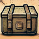
Bushcrafter — Your survival skills allow you to craft survival gear and items (knives, arrows, spears, clothes, gear, etc.- Tools Ownership — Your tool handling skills have improved significantly, allowing you to use them more effectively.
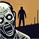
Survival Instinct — Zombies stop killing you when you are unconscious.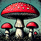
Mushroom Premonition — Your mushroom hunting skills have been perfected.- Invisible Stashes — Your survival skills allow you to mask caches and caches making them completely invisible.
🦌 Hunting¶
How to level: Hunt and butcher animals.
Passive bonus: Each level increases the number of meat cuts from skinning.
- Meat Hunter — You get more meat from the loot.
- Butcher — You reduce the time it takes to butcher the carcass.
- Master of Knifes — You reduce the wear of the knife when cutting carcasses.
- Trap Expert — You increase the effectiveness of animal traps.
- Tanner — You get more skins from the harvested animals, damaging them significantly less.
- Experienced Hunter — You have increased damage to animals from firearms.
- Anatomy Connoisseur — You can more easily inflict fatal wounds on animals with melee weapons.
- Rot Expert — You have learned how to cut rotten areas out of meat.
- Pathfinder — Your sharp eye notices the smallest details.
🎣 Fishing¶
How to level: Go fishing.
- Sushi Master — Your fish cutting skills allow you to extract more fillets.
- Quick Cleaning — Your fish cutting skills are at the highest level.
- Skillful Hands — You handle fishing rods, knives, and fishing gear carefully, reducing their wear and tear.
- Nets Fishing — Your fishing trap installation skills have improved.
- Clever Fisherman — The chance of biting is increased, which allows you to pull out the catch faster and more often.
- Lucky Fisherman — Your fishing skills allow you to hook real trophies more often.
- Tension Control — You perfectly control the tension of the fishing line, reducing the risk of its rupture.
- Repairman — You can easily repair damaged gear.
- Reliable Hooks — Your skills allow you to reduce the chance of losing hooks or bait when fishing.
- Four-Leaf Clover — Your are so lucky that your chances to catch valuable items is significantly increased.
- Cutting Rot — Your fish cutting skills make it easy to remove rotten areas while keeping the meat as fit as possible.
- Worms Digger — Each of your digs brings in more worms than usual.
- Craftsman — You have learned how to create homemade fishing rods and tackle from improvised tools.
The character skill system adds 9 skill trees to the base game. Skills are a core part of long-term character growth on this server.
Advanced Medicine¶
A simple bandage won't save you here. The medical system on this server is deep and realistic — every illness and injury progresses through distinct stages, each requiring a specific treatment. Learn this system or die from something a basic first-aid kit could have fixed.

 Medicines Overview¶
Medicines Overview¶
Medicines come in three forms:
- Tablets — Used for early-stage treatment and prevention. Packages hold multiple doses and can be stacked. Best for carrying multiples in your kit.
- Ampoules — Stronger medications for moderate to severe conditions. Require a syringe to administer. After each use, the syringe must be disinfected with alcohol or boiled in water before reuse.
- Injectors — Disposable single-use injectors. Similar to ampoules but no syringe needed — the injector is discarded after use.
Medicine tiers: Treatments come in Weak, Normal, and Strong variants. A higher-tier medicine can treat a lower-tier illness, but using a weaker medicine on an advanced illness will have no effect.
 Vaccines¶
Vaccines¶
Vaccines grant temporary immunity to specific diseases. Administer them before entering contaminated or dangerous areas:
| Vaccine | Protects Against |
|---|---|
| Vaxicam | Cold / Pneumonia |
| Zerivax | Zombie Virus |
| Rabivax | Rabies |
 Disinfection¶
Disinfection¶
Disinfection is critical. Always disinfect your hands and medical tools before performing any procedure. Dirty hands on an open wound will cause sepsis.
- Alcoholic Tincture and Disinfectant Spray can clean tools and wounds.
- Syringes must be disinfected after every use.
Physical Conditions¶
 Hematomas¶
Hematomas¶
Caused by blunt trauma — zombie hits, fists, or bludgeoning weapons. When multiple hematomas accumulate, your health will begin to decline. They heal naturally over time, but ointments speed up recovery significantly.
Treatments: Viprosal, Capsicum, Finalgon ointments (Weak → Strong).

 Gunshot & Stab Wounds¶
Gunshot & Stab Wounds¶
Bullets and blade wounds cause severe bleeding and may leave foreign objects in your body. Bandaging stops immediate bleeding but the wound will continue to seep until the object is surgically removed.
In severe cases, the wound penetrates internal organs — much harder to treat and requiring higher-quality surgical tools.
A ballistic vest can absorb bullet impacts, but even blocked shots transfer as hematomas rather than penetrating wounds.
Surgical Tools (Weak → Strong): Ceramic Surgical Bowl → Field Surgical Kit → IFAK → AFAK
⚠️ Always disinfect before surgery. Always suture the wound afterward.
 Surgical Sutures¶
Surgical Sutures¶
After surgery, sutures must be regularly disinfected to prevent sepsis. Check your wounds — infected sutures will deteriorate quickly and can become life-threatening.
 Concussion¶
Concussion¶
Caused by hard blows to the head, nearby explosions, or low-caliber bullets absorbed by a ballistic helmet. Symptoms include headache, dizziness, unstable movement, and blurred vision. Heals on its own over time, but medications significantly reduce severity and duration.
Treatments: Noopept (tablets) → Neirox (ampoule/injector).
 Hemostasis (Bleeding Rate)¶
Hemostasis (Bleeding Rate)¶
Your body's natural ability to slow bleeding. Specific medications can boost this process — critical when you are taking fire and can't stop to bandage properly.
Treatments: Vikasol (Weak) → Erytromixelin injector (Strong).
 Blood Regeneration¶
Blood Regeneration¶
Your body regenerates blood after blood loss. Medications can accelerate this process, helping you recover faster after wounds.
Treatments: Irovit / Magnesium Sulfate (tablets, Weak) → Erythropoetin (ampoule) → Erytromixelin injector (Strong).
Infections & Diseases¶
 Cold / Pneumonia¶
Cold / Pneumonia¶
Contracted from prolonged cold exposure. A mild cold can be cured by resting somewhere warm. Untreated, it progresses to pneumonia — which will slowly drain your health and requires antibiotics.
Treat early. Weak antibiotics like Tetracycline work on a mild cold. Pneumonia requires Normal or Strong antibiotics (Ibuprofen, Amoxiclav, Imipenem, etc.). Vaccination with Vaxicam prevents infection.
 Food Poisoning¶
Food Poisoning¶
From spoiled food, raw meat, rotten fruit, poisonous mushrooms, or dirty water. Symptoms (nausea, vomiting) appear quickly. Untreated, it causes dehydration and health loss.
Treatments: Charcoal Tablets / Polysorb (Weak) → Mesalazine / Metoclopramid (Normal) → Heptral / Stomaproxidal (Strong).
 Chemical Poisoning¶
Chemical Poisoning¶
From inhaling toxic gas in contaminated areas. Starts with coughing, escalates to nausea and severe health loss. Fatal without treatment.
Treatments: Rombiopental (Weak) → Neurocetal ampoule (Normal) → AntiChem Injector (Strong).
 Zombie Virus¶
Zombie Virus¶
Transmitted through airborne contact and zombie wounds — any hit from an infected carries a chance of transmission. Wearing a face mask and ballistic armor reduces the risk. The virus has a long incubation period before health decline begins, giving you time to find a cure.
Treatment: Zivirol (ampoule or injector) — acts as the antidote. Vaccination: Zerivax prevents infection.
⚠️ This is one of the most dangerous diseases. Always carry Zivirol in high-zombie areas.
 Sepsis¶
Sepsis¶
Infection from dirty wounds — caused by handling wounds without disinfecting hands, or using unsterilised tools. Gradually deteriorates health without treatment.
Treatment requires Strong antibiotics only: Flemoclav / Imipenem (ampoule) or Amoxiclav / Topoisomerase (injector).
 Rabies¶
Rabies¶
Transmitted by bites from infected animals (wolves). Progresses silently — early stage shows only mild weakness. Stage 2 causes severe nausea, preventing eating or drinking. Stage 3 causes rapid health loss and is fatal without treatment.
Treatments: Rabinoline (Normal ampoule) → Rifampicin / Rabinucoline (Strong). Vaccination: Rabivax prevents infection.
Symptoms¶
 Pain¶
Pain¶
All significant injuries cause pain, which impairs movement and combat. Pain fades naturally over time but can be suppressed with painkillers.
Treatments (Weak → Strong): Codeine / Analgin / Ibuprofen (tablets) → Novacaine (ampoule) → Morphine / Hexobarbital / Promidol (injectors).
⚠️ Be careful with strong painkillers — they carry a real overdose risk.
 Overdose¶
Overdose¶
Taking too much medication introduces overdose toxicity that builds over time. It progresses through three stages:
- Stage 1: Nausea and hallucinations.
- Stage 2: Loss of consciousness — you become completely vulnerable.
- Stage 3: Critical health loss, potentially fatal.
The toxicity clears naturally as your body processes it. Drinking water reduces overdose progression. Don't stack the same medicines repeatedly.
Emotional States¶
 Sleep¶
Sleep¶
Your character needs rest. The sleep indicator tracks fatigue:
- Yellow indicator: Your character starts yawning and vision degrades.
- Red indicator: Risk of losing consciousness from exhaustion.
Sleep works best in warm, safe places — near a fire, inside a building, or in a sleeping bag. You cannot sleep while freezing, starving, or suffering from a Stage 2+ illness. While asleep, health and blood recover rapidly, and you may naturally shake off mild illnesses.
Energy drinks (MadBull, Yaguar, Gang, etc.) can temporarily suppress the sleep need in an emergency.
 Mental Health¶
Mental Health¶
Extreme stress degrades your mental state. Causes include:
- Prolonged exposure to Psionic Zones (dangerous psychoactive areas on the map).
- Repeated zombie attacks.
- Consuming human meat.
As mental health deteriorates, you experience panic, hallucinations, and loss of control. At zero mental health, your character may take uncontrollable actions that lead to death.
Treatments (Weak → Strong): Adepress / Agteminol / Venlafaxine (tablets) → Actaparoxetine / Metralindole (ampoule) → Amitriptyline / Amfitalicyne (Strong).
Wearing a PSI Helmet provides strong protection in Psionic Zones.
The advanced medicine system on this server uses the Terje Medicine mod. Skills and Radiation systems are covered in their own sections.
Radiation Zones¶
Certain high-value military and industrial areas on DeerIsle are heavily irradiated. Entering unprepared is a death sentence — not an instant one, but a slow and painful sickness that will kill you if you ignore it.
How Radiation Works¶
Radiation zones spread over a radius. The closer you are to the center, the higher the exposure rate. On the outer edge, a gas mask alone may be enough. Near the core, you need a full NBC suit.
Radiation builds up inside your body as a rad-buffer. Sources of exposure:
- Being inside a radiation zone
- Touching or picking up contaminated items
- Wearing clothing that has accumulated radiation
The rad-buffer fills continuously while you're exposed. Once it reaches a threshold, Radiation Sickness sets in and escalates in stages. You do not die directly from radiation — it kills you through the staged sickness effects.
Your items and clothing also get contaminated. Everything in your inventory accumulates radiation while you're in a zone. You must decontaminate your gear after leaving, or it will continue to expose you.
 Radiation Sickness Stages¶
Radiation Sickness Stages¶
| Stage | Name | Effects |
|---|---|---|
| 1 | Mild Radiation Sickness | Weakness, nausea, dizziness — reduced stamina and coordination |
| 2 | Severe Radiation Sickness | Bleeding, suppressed immune system — wounds won't clot, infections become more likely |
| 3 | Terminal Stage | Severe health drain, extreme exhaustion — death is imminent without immediate treatment |
Dosimeters¶
You need a dosimeter to detect radiation zones and measure how dangerous they are. All dosimeters require a D-size battery.
| Device | Measures | Max Reading | Detection Radius |
|---|---|---|---|
| Radiometer RKS-20.03 "Pripyat" | µSv/h | 9,999 µSv/h | 3 m |
| Radiometer MKC-01CA1M | mR/h | 9,999 mR/h | 5 m |
| CD V-700 Geiger Counter | mR/h | 5,000 mR/h | 10 m |
| Household Dosimeter DBG-05B | mR/h | 999 mR/h | 1.5 m |
Tips: - The CD V-700 has the widest detection radius (10 m) — best for scouting zone boundaries at a distance. - The Pripyat is the most accurate for precise measurements close-up. - ⚠️ The CD V-700 may give false low readings at extremely high radiation levels — if it suddenly drops to near-zero deep in a zone, it has been overwhelmed, not that it's safe.
🛡️ NBC Protection¶
To safely enter a radiation zone, you need a full 6-piece NBC suit plus a gas mask with filter. Protection is calculated per slot, weighted by importance:
| Slot | Item | Protection | Weight |
|---|---|---|---|
| 😷 Mask | Military Gas Mask | 95% | 41.67% ← most important |
| 🧥 Body | NBC Jacket | 95% | 16.67% |
| 👖 Legs | NBC Pants | 95% | 16.67% |
| 👟 Feet | NBC Boots | 95% | 8.33% |
| 🧤 Hands | NBC Gloves | 95% | 8.33% |
| 🧢 Head | NBC Hood | 95% | 8.33% |
Critical: The gas mask accounts for 41.67% of your total protection. Without it, even wearing a full 5-piece NBC suit only gives you ~55% protection — not enough for the center of a hot zone. The mask is the single most important piece of gear before entering any radiation zone.
Available Gas Masks¶
All three gas masks available on this server provide 95% radiation protection in the Mask slot. Since the Mask slot carries the highest weight (41.67%), any of them is a valid choice — pick based on what filter you can source.
| Mask | Origin | Filter Slot | Radiation Protection |
|---|---|---|---|
| M50 Gasmask | Forward Operator Gear | Standard Gas Mask Filter | 95% |
| AVON M53A1 Gasmask | Forward Operator Gear | C420 PAPR Filter (proprietary) | 95% |
| PMK-4 Gas Mask | Tactical Flava | Standard Gas Mask Filter | 95% |
M50 Gasmask — A US military-pattern mask used by Special Warfare operators. Takes standard filters, making resupply straightforward. The mask body itself has a small built-in filter reserve (225 ml) that will keep you alive briefly with no attached filter, but it won't last long — always run a proper filter cartridge.
AVON M53A1 Gasmask — British NBC mask with an external PAPR (Powered Air-Purifying Respirator) filtration system attached to the side. Uses a proprietary C420 PAPR Filter (150 durability) rather than standard filter cartridges — these are rarer, so stock up before heading into a zone. Same protection tier as the M50.
PMK-4 Gas Mask — A modern Russian military gas mask with a frontal cartridge mount. Takes standard Gas Mask Filters, same as the M50. Despite not inheriting NBC protection by default (it uses Clothing as its base rather than the GasMask class), protection has been server-configured to match the 95% NBC standard — it is fully effective.
Gas Mask Filters¶
| Filter | Protection |
|---|---|
| Improvised Gas Mask Filter | 70% |
| Gas Mask Filter | 90% |
| Military Gas Mask (built-in) | 95% |
Filters drain over time while in a radiation zone. Always carry spares. Running out of filter in the middle of a zone means immediate full exposure.
Treatment¶
Once you have radiation sickness, you must take anti-radiation medication to flush the rad-buffer from your body. Higher strength (Level) drugs work faster and last longer, but have stricter overdose limits — don't stack too many at once.
| Item | Strength | Duration | Overdose Threshold |
|---|---|---|---|
| B190 Tablets | 1 | 140s | 0.3 |
| Potassium Iodide Tablets | 1 | 60s | 0.2 |
| Hexacyanoferrate Tablets | 1 | 120s | 0.3 |
| Mexamine Tablets | 2 | 25s | 0.75 |
| Pentacin Ampoule | 2 | 400s | 0.5 |
| Carboxyme Ampoule | 2 | 600s | 0.6 |
| Radioprotector Injector | 3 | 600s | 0.75 |
The Radioprotector is the strongest treatment available — it reduces the effects of alpha and gamma radiation and promotes accelerated rad-buffer clearance. Treat it as a last resort or prep before a very hot zone.
🧽 Decontaminating Your Gear¶
After leaving a zone, your clothing and inventory items are contaminated and will continue to expose you. Clean them using one of:
- Large amount of clean water — basic wash, removes light contamination
- Soapy solution — combine Household Soap with water; removes moderate contamination including blood and radiation traces
- Chemical Canister — specialized decontamination fluid; the most effective option for heavily irradiated gear
Decontamination Tent (Buildable)¶
You can build a Radiation Decontamination Shower at your base. It combines: - Radiation Decontamination Shower (base structure) - Garden Shower - Water Pump (12V, connects to a car battery) - Chemical Canister
This lets you decontaminate large objects and vehicles that can't be cleaned by hand.
🗃️ Protective Containers¶
Store valuables in radiation-shielded containers — items inside do not accumulate radiation even when you carry them into a hot zone.
| Item | Slots |
|---|---|
| Radiation Protection Box | 60 |
| Radiation Protection Suitcase | 35 |
Immunity Skill Perks¶
Two perks in the Immunity skill tree directly affect radiation:
- Radiation Resistance — Reduces the severity of symptoms and the impact of negative effects from radiation exposure.
- Radiation Regeneration — Your body clears the rad-buffer faster after leaving a contaminated zone.
See the Character Skills section for how to unlock these perks.